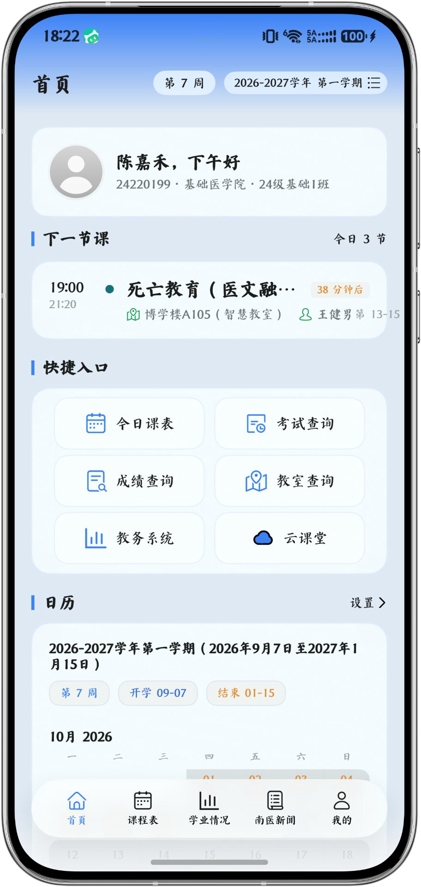
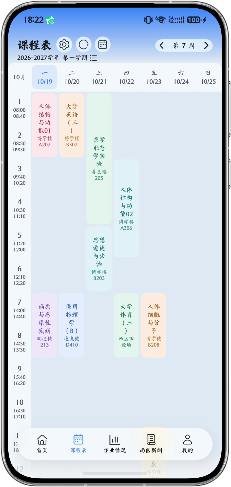

鸿蒙原生
ArkTS 原生开发，HarmonyOS NEXT 深度适配，流畅、省电、无兼容包袱。
今日课表、课程表、成绩学业、云课堂、南医新闻、快捷选课， 全部收进一个 9.93 MB 的鸿蒙原生应用。一次登录，全天在线； 没有广告，没有推送，也不上传你的密码。

不是又一个网页套壳。它把教务系统真正搬进了鸿蒙——离线能用、登录无感、数据归你。
ArkTS 原生开发，HarmonyOS NEXT 深度适配，流畅、省电、无兼容包袱。
课表、成绩、学业全部落盘缓存，地铁教室没信号也能翻。
密码只在本地用于模拟登录，不上传自有服务器；可随时清缓存。
基于 MIT 协议开源，Fork 后即可适配你所在高校，通用改动可提回上游。
不用装就能翻。点右侧任意一屏，左边立刻切换；切到平板，还能看同一份代码在大屏上的排布。

问候、下一节课倒计时、六大快捷入口与官方校历，一屏之内把当天交代清楚。

一套 ArkUI 布局，自适应手机单列与平板、2in1 多栏。大屏不是把手机放大——课程表铺满整周，成绩与学业左右分栏，新闻多列并排。
安装包约 9.93 MB，需 HarmonyOS NEXT 设备（API 26 及以上）。首次登录使用教务系统账号，支持统一身份认证与教务直登两种方式。
点击即下：安装包由本站直接提供（9.93 MB），不跳转 GitHub。若浏览器拦截下载，可走 备用线路。
另有 开源鸿蒙（OpenHarmony）版：移除华为专有 Kit，可在 OH 开发板/第三方发行版运行；无前台防窥检测，底栏为原生标签栏。
在手机浏览器打开下载页，获取最新 .hap 文件。若提示「未知来源」，在设置中允许浏览器安装应用。
点击安装包，系统会校验签名。首次安装需在「设置 → 安全 → 应用安装」中信任来源。
打开应用，阅读并同意隐私协议，使用学号登录。首次如遇多因子认证，按提示扫码一次即可。